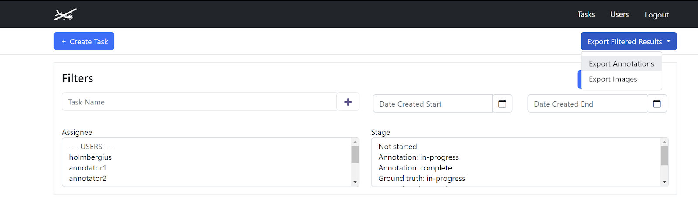

Exporting Task Annotation and Image Data for Analysis#
Data can be exported for third-party application analysis and modeling by generating image and annotation data as CSV for one or more tasks selected in the Tasks view. Here’s how to export data:
Click Tasks in the header navigation menu to open the Tasks view.
In the Tasks view, use the filters to filter the table down to only those tasks that you want to export.
Click the Export Filtered Results button and then select Export Annotations or Export Images options to choose the content of the
CSVfile to export.A progress bar indicates the compilation progress of the downloadable
CSVfile. When the progress bar completes, click Download to download theCSVfile.

Export Images CSV Data#
The following fields are available in the Export Images CSV file:
Task Name - Name of the task this image was included in. An image may be included in multiple tasks, and if so, the task name is repeated on multiple lines in this file.
Task ID - The Scout internal ID of the task this image belongs to.
Image Filename - Original filename of the image.
WIC Confidence - Machine learning score predicting confidence of one or more labels present in the image. The score ranges from 0 (nothing predicted in the image) to 1 (maximum confidence that at least one ML model category would be found in the image). If ML has not been run on this image, the WIC Confidence is empty.
Ground Truth Status - True/False value indicating whether review of this image has been completed in the Ground Truth task stage.
Exclusion Side - The side of the Division Line that is exclude in counts of animals in overlapping images. This value is always: right.
Inclusion Top X Fraction - The decimal fraction (0 to 1) of the top insertion point of the division line. This is the fraction of the image width from the left-side of the image at which the top of the division line intersects the bottom of the image.
Inclusion Bottom X Fraction - The decimal fraction (0 to 1) of the bottom insertion point of the division line. This is the fraction of the image width from the left-side of the image at which the bottom of the division line intersects the bottom of the image.
Export Annotation CSV Data#
The following fields are available in the Export Annotations CSV file:
Task Name - The name of the task that the annotation is included.
Task ID - The Scout internal ID of the task this annotation belongs to.
Image Filename - Original filename of the image.
Image ID - Scout internal ID of the image.
Box X - X coordinate of the annotation bounding box’s top left corner.
Box Y - Y coordinate of the annotation bounding box’s top left corner.
Box W - Pixel width of the bounding box.
Box H - Pixel height of the bounding box.
Box Confidence - If machine learning created an annotation, this is the confidence score of the bounding box of this annotation. The score ranges from 0 (no confidence) to 1 (maximum confidence that the box is correctly predicted).
Classification - The predicted classification (i.e. type) of the bounding box, such as elephant or buffalo.
Classification Confidence - If machine learning created this annotation, this is the confidence score of the classification (e.g., elephant) assigned to this annotation. The score ranges from 0 (no confidence) to 1 (maximum confidence that the classification is correct).
Assignee - The Scout user that drew the bounding box.
Timestamp - Timestamp of annotation creation.
Is Ground Truth - Whether this annotation has been approved in the Ground Truth process. Annotations that have this field as True are likely to be more reliably accurate as they have been reviewed independently.
Excluded By Line - Whether the centroid of this bounding box falls outside or inside the division line.